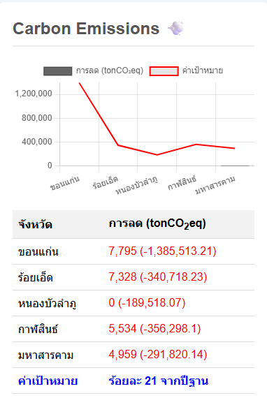

รายงานคุณภาพสิ่งแวดล้อม: การจัดการสู่สังคมคาร์บอนต่ำ

ภาพที่ 6: ผลการลดการปล่อยก๊าซคาร์บอนไดออกไซด์เทียบเท่าของ 5 จังหวัด
บทนำ
รายงานฉบับนี้จัดทำขึ้นเพื่ออภิปรายผลและให้ข้อเสนอแนะเพื่อการจัดการสู่สังคมคาร์บอนต่ำในพื้นที่ 5 จังหวัดได้แก่ ขอนแก่น ร้อยเอ็ด หนองบัวลำภู กาฬสินธ์ และมหาสารคาม โดยใช้ข้อมูลจากผลการลดการปล่อยก๊าซคาร์บอนไดออกไซด์เทียบเท่า (tonCO₂eq) เทียบกับค่าเป้าหมายที่กำหนดไว้ที่ร้อยละ 21 จากปีฐานเป็นเกณฑ์ในการประเมิน
การอภิปรายผล
ภาพที่ 6 แสดงผลการลดการปล่อยก๊าซคาร์บอนไดออกไซด์เทียบเท่า (tonCO₂eq) ของ 5 จังหวัด โดยมีค่าเป้าหมายที่ร้อยละ 21 จากปีฐานสำหรับทุกจังหวัด
- ทุกจังหวัดมีผลการลดก๊าซคาร์บอนฯ ต่ำกว่าเป้าหมายที่ตั้งไว้เป็นอย่างมาก โดยมีช่องว่าง (gap) เป็นค่าติดลบในระดับที่สูงมาก
- ขอนแก่น มีช่องว่างจากเป้าหมายมากที่สุดถึง -1,385,513.21 tonCO2eq ซึ่งอาจเป็นผลมาจากปริมาณการปล่อยก๊าซคาร์บอนฯ ตั้งต้นที่มีจำนวนมากที่สุดในกลุ่มนี้
- หนองบัวลำภู มีผลการลดก๊าซคาร์บอนฯ เป็น 0 แสดงให้เห็นว่ายังไม่มีการดำเนินการลดการปล่อยก๊าซคาร์บอนฯ อย่างเป็นรูปธรรม
- จังหวัดที่เหลือ (ร้อยเอ็ด, กาฬสินธ์, มหาสารคาม) ยังทำได้ต่ำกว่าเป้าหมายที่ตั้งไว้เช่นกัน โดยมีผลต่างอยู่ในช่วง -291,820.14 ถึง -356,298.1 tonCO₂eq
ข้อเสนอแนะเพื่อการจัดการสู่สังคมคาร์บอนต่ำ
เพื่อพัฒนาประสิทธิภาพในการลดการปล่อยก๊าซเรือนกระจกและบรรลุเป้าหมายที่ตั้งไว้ จึงมีข้อเสนอแนะดังต่อไปนี้:
เร่งรัดการดำเนินงาน
- ทุกจังหวัดควรเร่งรัดการดำเนินงานตามแผนการลดก๊าซเรือนกระจกที่วางไว้ โดยเฉพาะจังหวัดที่ยังไม่มีการลดเลยอย่างหนองบัวลำภู ควรเริ่มโครงการลดการปล่อยก๊าซคาร์บอนฯ โดยทันที
ส่งเสริมการใช้พลังงานสะอาด
- สนับสนุนการเปลี่ยนผ่านสู่การใช้พลังงานหมุนเวียน เช่น พลังงานแสงอาทิตย์ และพลังงานชีวมวล เพื่อลดการพึ่งพาพลังงานจากเชื้อเพลิงฟอสซิล
เพิ่มประสิทธิภาพการใช้พลังงาน
- รณรงค์และออกกฎระเบียบเพื่อส่งเสริมการประหยัดพลังงานในภาคครัวเรือน ภาคอุตสาหกรรม และการขนส่ง
เพิ่มพื้นที่สีเขียว
- ส่งเสริมการปลูกป่าและการอนุรักษ์ป่าไม้ เพื่อเพิ่มศักยภาพในการดูดซับก๊าซคาร์บอนไดออกไซด์ของระบบนิเวศ
พัฒนาโครงสร้างพื้นฐานด้านการขนส่ง
- สนับสนุนการใช้ระบบขนส่งสาธารณะ และการใช้ยานยนต์ไฟฟ้า เพื่อลดการปล่อยก๊าซเรือนกระจกจากภาคการขนส่ง
สร้างความร่วมมือ
- ประสานความร่วมมือระหว่างหน่วยงานภาครัฐ ภาคเอกชน และประชาชน ในการดำเนินโครงการลดคาร์บอนในระดับท้องถิ่น